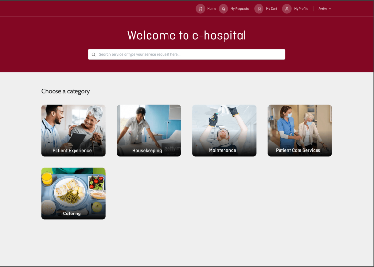
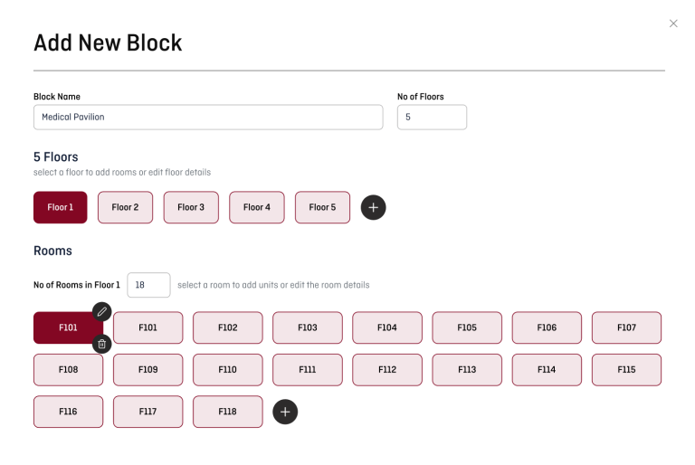
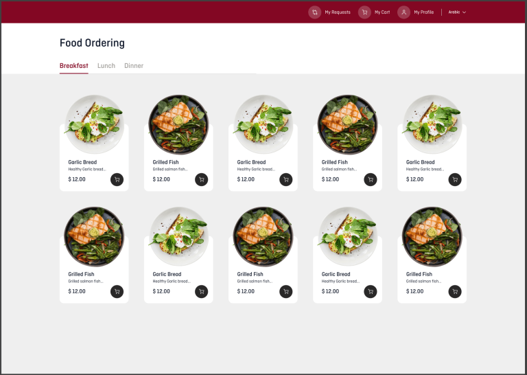
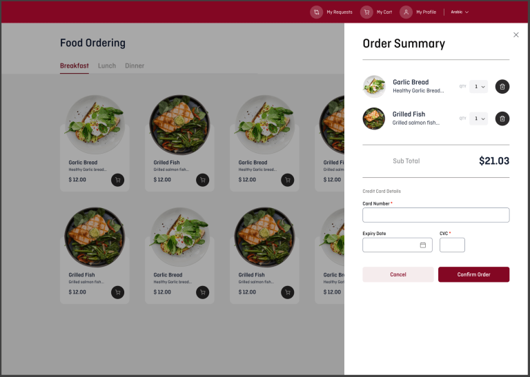
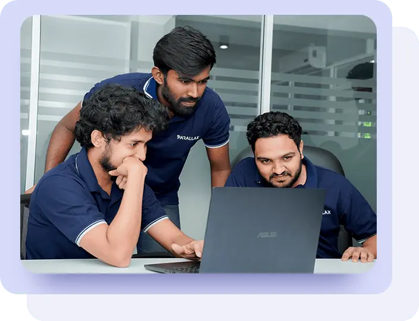

Patient Facility Management, reimagined as e-hospital
An online platform that lets a leading UAE healthcare provider's patients submit and track service requests seamlessly — turning a flooded inbox into a tracked, accountable, and responsive system.
The Challenge
Thousands of daily patients, one inbox
A UAE-based healthcare provider managing thousands of daily patients faced significant challenges with patient inquiry management — causing inefficiencies, delays, and complaints.
The Solution
A single, trackable service platform
Parallax built a tailored facility-management solution: an online platform where patients submit and track inquiries, requests are categorized and assigned, and managers oversee everything from one centralized dashboard — measurably improving patient satisfaction.
Inside e-hospital

One front door for every service
Patients land on a single welcome screen and choose a category — Patient Experience, Housekeeping, Maintenance, Patient Care Services, or Catering — then search or submit a request in seconds.
- Patient Experience
- Housekeeping
- Maintenance
- Catering

Configure the whole facility
Managers model the building itself — add blocks, define floors, and generate rooms in bulk. Every request maps to a real location, so the right team is dispatched to the right room every time.
- Blocks & Floors
- Room Mapping
- Task Assignment

Order in-room services
Beyond inquiries, patients browse catalogues — like catering — with images, descriptions, and pricing, then add items to a cart for a familiar, e-commerce-grade ordering experience.
- Service Catalogue
- Cart
- Breakfast / Lunch / Dinner

Checkout & payments
A clean order summary totals the request and collects card payment inline, with automated notifications keeping patients informed at every status change — all available in multiple languages.
- Order Summary
- Card Payments
- Live Notifications
Capabilities at a glance
Portal for Patients
User-friendly online inquiry submission and real-time tracking.
Centralized Dashboard
Streamlined categorization and task assignment for managers.
Real-Time Updates
Automated notifications and live status updates.
Performance Analytics
Built-in analytics and metrics reporting.
Delivered to the client's full requirements
- Online PortalSubmission and real-time tracking.
- Categorize & AssignRoute requests to the right team.
- Centralized DashboardOne view for facility managers.
- Automated NotificationsPlus performance-metrics reporting.
- Responsive AccessFull web and mobile experience.
- Role-Based SecurityAuth & data-protection compliance.
- System IntegrationConnects with existing hospital systems.
- Multi-LanguageLocalization for diverse patients.
Efficiency up. Complaints down.
The platform turned a fragmented, manual inquiry process into a tracked, accountable, responsive system — enhancing operational efficiency and improving patient satisfaction across the facility.

Make a long-term IT partnership
Call us to build a reliable, long-term solution for your business.